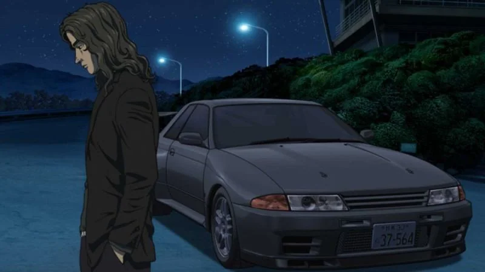

Inspiration from the Real World
The following page delves into the fascinating real-life inspirations behind Initial D, comparing elements from the manga and anime with their real-world counterparts. Here, you’ll find how Shuichi Shigeno drew from Japan’s actual mountain racing culture, scenic roads, and iconic cars to create an authentic and thrilling experience. We’ll showcase the real-life locations, cars, and racing techniques that influenced Initial D, highlighting how they were skillfully adapted into both the manga and anime. This section reveals the roots of Initial D’s world, connecting fans to the rich culture of Japanese street racing, comparing the 3 different types of media directly.
Real Life
Manga

Anime
The Toyota AE86 Trueno, a humble yet iconic car, is celebrated in real-life Japanese car culture for its agility and affordability. In the manga, it symbolizes Takumi’s progression as a driver, using skill to beat higher-powered cars on mountain roads. The anime amplifies this by showcasing the AE86’s precision in dramatic races, making the underdog vehicle a hero for fans worldwide.
Real Life
Manga
Anime
The Mazda RX-7 FD3S is a powerhouse of Japanese engineering, known in real life for its twin-rotor engine and sleek design. In the manga, Keisuke Takahashi’s RX-7 represents power and precision, often contrasting with Takumi’s AE86 in terms of speed. The anime adds to this dynamic, presenting the RX-7 with bold visuals and sound effects that emphasize its aggressive style on the road.
Real Life

Manga

Anime
The Nissan Skyline GT-R R32, a real-life icon known as “Godzilla” for its dominance on and off the track, represents raw power and advanced engineering. In the manga, it’s driven by notable characters who showcase its superior handling and strength. The anime further brings the GT-R’s legendary status to life, highlighting its formidable acceleration and control, which contrast with lighter cars like the AE86.